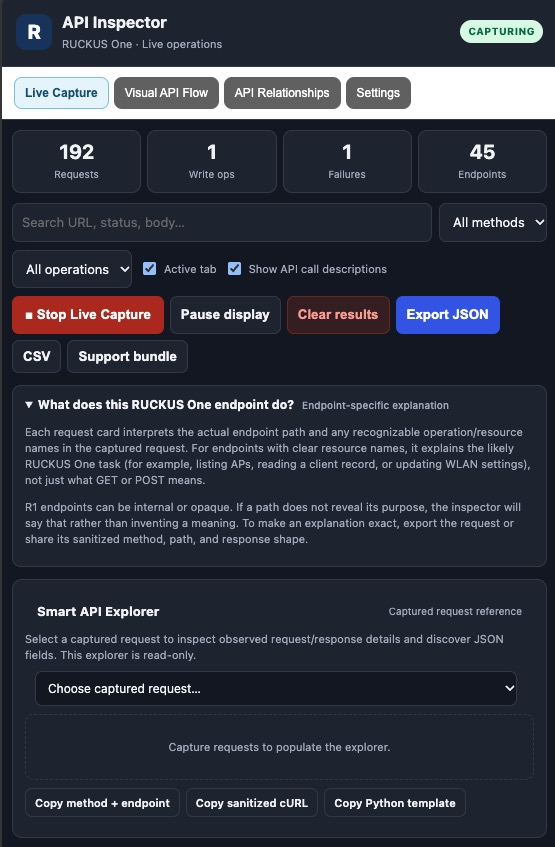

RUCKUS One API Inspector
By Terry Henry
A browser extension for observing and visualizing API requests made by the RUCKUS One web interface.
Key features
- Live Capture — observe API requests while navigating RUCKUS One.
- Workflow Discovery — group captured calls into time-based windows.
- Visual API Flow — visualize the chronological order of observed calls.
- API Relationships — inspect endpoint and field relationships inferred from captured traffic.